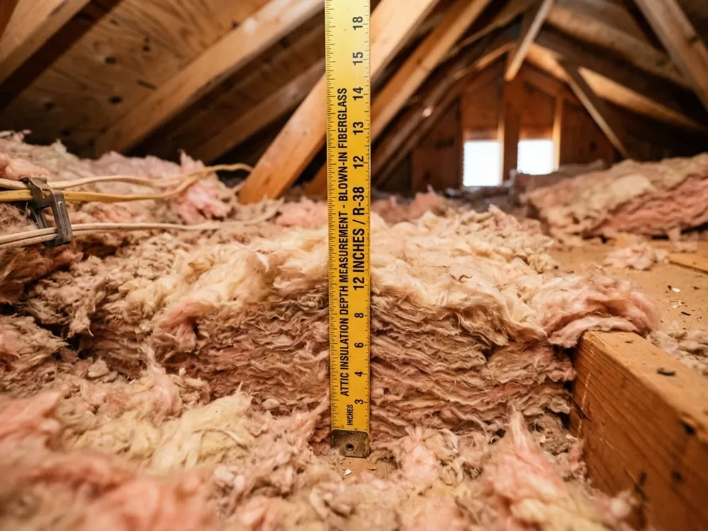
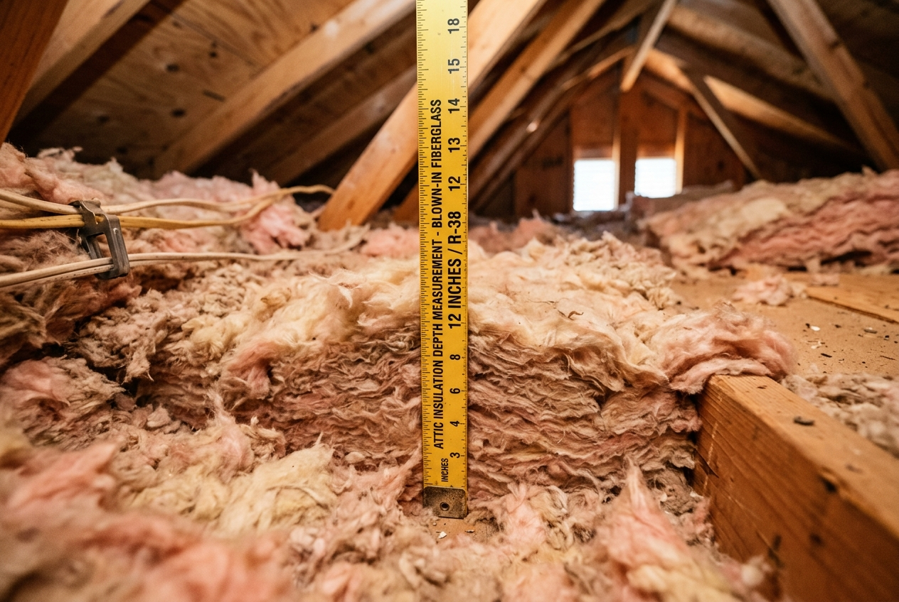

Choose blown in if there is no HVAC in the attic. Choose spray foam if ducts or an air handler sit in the attic. Blown in is $1.00 to $2.50 per sq ft. Spray foam is $2.00 to $4.50 per sq ft. We install both, and we measure your attic first.
Blown In Insulation Houston
If your upstairs stays hot and your AC runs all afternoon, your attic is the first place to check. We measure the depth that is already there, tell you what you need in inches and R value, and give you the price in writing before any work is scheduled. Blown in insulation costs $1.00 to $2.50 per sq ft.
5.0 stars from 5 Google reviews
Call (832) 291 2738, Monday to Saturday, 8am to 6pm
How Blown In Insulation Works
A blowing machine feeds loose fiberglass through a hose, in controlled passes, until it reaches an even depth across the attic floor. That is how blown in insulation works in a Houston attic. It is the main fix when an attic is thin, settled, or bare, and the upstairs will not cool.
Houston averages 106.5 days a year at 90 degrees or above, so heat sits in the attic all day. A thick, even layer slows that heat moving down into the rooms below. It does not fix a broken AC or a leaking roof.
The material is fine glass fibers. It is free flowing, so it fills around joists, wires, ducts, pipes, and corners that pre cut batts leave open. There are no seams to line up and no gaps to cut around.
That layer sits on the ceiling plane, above your living space. It does not air seal on its own. Air can still move through gaps around can lights, the attic hatch, duct boots, and top plates, unless those gaps are sealed first. That is why the walkthrough matters. We measure depth in several spots, look at what is already there, and tell you if sealing is needed before we blow. If we find leaks, we seal them first, then we blow to depth. If we do not find leaks, we do not charge you for sealing you do not need.


Signs Your Houston Attic Needs More Insulation
If you can see the tops of the joists, your attic insulation is thin. Put a ruler in the insulation in several spots and read the depth. Do it near the hatch, in the middle of the attic, and over the hottest room. One spot is not enough, because depth is rarely even in an old attic.
Check these things in your attic:
- The insulation is level with the joists or below them
- One upstairs room is always hot while the rest of the house is fine, check the attic above that room first
- The layer is dry and clean, we top it up
- The layer is wet, moldy, or rodent damaged, we remove it first
Spring Branch West includes many 1960s ranch style houses, and their attics often have a thin, uneven layer that has settled. You do not need to climb in yourself. That is what the free walkthrough is for.
How Much Insulation Does a Houston Attic Need?
Most Houston attics we blow to R38, about 15 inches. That is the code minimum, and it is the target most of our jobs end at.
Your exact target is set on the walkthrough, in inches and R value, and we put it in the written estimate. If your attic is bare, we go to R38. If 3 to 4 inches are already there, we top it up to R38.
ENERGY STAR gives a wider guide for Zone 2, R30 to R60 for an uninsulated attic. Loose fiberglass is about R2.5 per inch. R49 is the code level for new work.
For the full Zone 2A depth and R-value breakdown, see our Houston Attic R-Value Guide.
Settled depth for blown in fiberglass, from Owens Corning AttiCat:
| Target | Settled depth | Bags per 1,000 square feet |
|---|---|---|
| R38 | 13.5 inches, minimum settled thickness | 19 |
| R49 | 17 inches, minimum settled thickness | 25 |
| Zone 2 guide, uninsulated attic | R30 to R60, no inches given | ENERGY STAR |
Depth is where competitors disagree. For R38, one Houston page gives about 13 inches, another gives about 15 inches, and a third gives 10 to 15 inches. The difference is the product, and the R value per inch of that product. Owens Corning AttiCat gives R49 at a minimum settled thickness of 17 inches, and 25 bags per 1,000 square feet. Do not compare a quote by inches alone. Compare it by R value and by settled depth.
Can new blown in fiberglass be installed over old insulation?
Yes. If the old insulation is dry, clean, and free of pest or moisture damage, new fiberglass can be blown on top to bring the total depth up to the target R value. If it must come out, we remove it, seal the leaks, then blow in fresh. We do not remove clean, dry insulation just to charge for removal.
Benefits of Blown In Attic Insulation
The main benefit of blown in attic insulation in Houston is a full layer at R38, about 15 inches, that keeps the upstairs cooler in the afternoon. Houston has 106.5 days a year at 90 degrees or more, so a thin attic means the upstairs stays hot and the AC runs all afternoon.
The EPA average from ENERGY STAR is 15 percent on heating and cooling costs, and 11 percent on total energy costs, when you air seal and add insulation. That is a national average, not a promise for your house.
Blown in fiberglass spreads in an even layer across the attic floor. It can fill corners and gaps around the attic hatch, can lights, duct boots, and top plates that batts leave open. It can top up a thin layer that has settled, without opening the ceiling, if the old layer is dry and clean. If it is wet, moldy, or rodent damaged, we remove it, seal the leaks, and blow in fresh insulation.
Loose fill does not air seal on its own. It is porous, so air can still move through it. We seal leaks only if we find them on the walkthrough, at $250 to $740 per attic.
Fiberglass itself does not rot, because it is glass. It still settles over time, so depth and R value fall.
Loose fill is not a basement wall fix.
Blown In Insulation Houston vs Spray Foam
Choose blown in for a Houston attic with no HVAC up top. It costs $1.00 to $2.50 per sq ft. Choose spray foam if ducts or an air handler sit in the attic. It costs $2.00 to $4.50 per sq ft.
| Feature | Blown in | Spray foam |
|---|---|---|
| Price | $1.00 to $2.50 per sq ft | $2.00 to $4.50 per sq ft |
| Where it goes | Attic floor | Roof deck in many jobs, not only on the floor |
| Air sealing | Does not air seal on its own | Can seal air as it insulates |
| Choose it when | No HVAC up top | Ducts or an air handler sit in the attic |
For a 1,000 square foot attic, that is $1,000 to $2,500 for blown in, and $2,000 to $4,500 for spray foam. Those are Houston market prices from our homepage, as of November 2026. They are not exact project pricing.
Blown in attic insulation in Houston goes on the attic floor. Most of our blown in jobs end at R38, about 15 inches. It does not air seal on its own. We seal leaks only if we find them on the walkthrough, at $250 to $740 per attic.
Spray foam can seal air as it insulates. We install open cell and closed cell spray foam. It goes on the roof deck in many jobs, not only on the floor.
If your upstairs stays hot and the AC runs all afternoon, and your attic has no HVAC up top, blown in on the floor is often the lower cost fit, if the ceiling plane is sealed or we can seal it. If ducts or an air handler sit up top, and they lose cool air into a hot attic, blown in on the floor will not fix that loss. Spray foam on the roof deck is the option we check first in that case. We measure your attic first, and we give you the price in writing.
How much does blown in insulation cost for 1,000 square feet?
Blown in insulation cost Houston, from our homepage, November 2026. These are Houston market prices, not exact project pricing. Your exact price is set on the free walkthrough, in the written estimate.
| Service | Price | What it covers |
|---|---|---|
| Blown in fiberglass | $1.00 to $2.50 per sq ft | Blown in insulation |
| Spray foam | $2.00 to $4.50 per sq ft | Spray foam insulation |
| Air sealing | $250 to $740 per attic | Separate line, only if leaks are found on the walkthrough |
| Removal | $1.00 to $1.50 per sq ft | Only if needed |
| Full replacement | $2.00 to $4.00 per sq ft | Scope not stated on the homepage, ask what this covers |
For a 1,000 square foot attic in Houston, blown in insulation costs $1,000 to $2,500. That is $1.00 to $2.50 per sq ft, at the homepage price, before air sealing or removal.
Most of our jobs end at R38, about 15 inches. The R value sets the depth, and the depth sets the material. A bare attic needs more material than one with 3 to 4 inches already there. Your exact price is set on the free walkthrough, in the written estimate.
Air sealing is a separate line, $250 to $740 per attic, only if we find leaks on the walkthrough. Removal, if needed, is $1.00 to $1.50 per sq ft. Full replacement is $2.00 to $4.00 per sq ft.
One Houston job was a 1,000 to 1,500 square foot attic, with 3 to 4 inches already there. We did blown in plus spray foam in part of it. The total was over $3,500, for both together, not for blown in alone.
HomeGuide, a national guide, gives $1,100 to $1,900 per 1,000 square feet at R49, not a Houston quote at our usual R38. Some Houston prices run lower than ours, for blown in alone. We do not know what R value, settled depth, or included work those prices cover. Ask for those, and compare them.
What Happens on Install Day
A normal blown in job takes more than one day. That time runs from the free walkthrough to the final check. It does not count only the blowing step.
-
1
Free walkthrough, we measure depth and R value in several spots on the attic floor and show you the numbers
-
2
Written estimate, it lists the material, the target R value, air sealing if leaks are found, removal if needed, and the final price, and there is no work before you approve it in writing
-
3
Install, we blow the fiberglass to the depth in the estimate, and if removal was in the estimate, we remove, seal, then blow in fresh
-
4
Cleanup and final check
-
5
Follow up
Step 1 is the free walkthrough. We measure depth and R value in several spots on the attic floor and show you the numbers. Step 2 is the written estimate. It lists the material, the target R value, air sealing if leaks are found, removal if needed, and the final price. Most of our jobs end at R38, about 15 inches. There is no work before you approve it in writing.
Step 3 is the install. We blow the fiberglass to the depth in the estimate, clean up, and do a final check. If removal was in the estimate, we remove, seal, then blow in fresh. Step 4 is the follow-up.
How long does an attic insulation job take?
A normal blown in job takes more than one day, from the free walkthrough to the final check. That is not the blowing time alone. The blowing step is the fastest part. Measuring, sealing, removal, and checking take the rest of the time.
Is Blown In Insulation Right for Your Houston Attic?
Blown in fits a Houston attic when the attic needs R38, about 15 inches, on the attic floor. It fits when the old layer is thin, settled, or bare, and dry and clean. It can top up what is already there. Blown in is $1.00 to $2.50 per sq ft. Spray foam is $2.00 to $4.50 per sq ft. That is the lower upfront cost.
Blown in does not fit when the old layer is wet, moldy, or rodent damaged. Then we remove it, seal the leaks, then blow in fresh. It does not fit when ducts or an air handler sit in the attic and lose cool air into a hot attic. In that case, spray foam on the roof deck is the option we check first. We install both.
Loose fill is not a basement wall fix. It is not for a damp below grade space.
If you are not sure which case you are in, book the free walkthrough. We measure the depth and R value, and tell you in writing.

Blown In Attic Insulation FAQs
For an attic, it gives a full layer at R38, about 15 inches. That layer keeps the upstairs cooler in the afternoon. For a basement, it is not a wall fix. Loose fill is not for damp below grade spaces.
Blown in fiberglass does not rot, because it is glass. It settles over time, so the depth drops, and the R value drops with it. That is why depth matters more than age. Check the depth with a ruler, and top up when it is low. We do not give a year number as a guarantee. Measure depth, not years.
No, not for most Houston attics. Cellulose settles more than fiberglass. One Houston company says cellulose settles 15 to 20 percent, and R38 can drop to R30. It also absorbs moisture, which is a risk in Houston humidity. We install blown in fiberglass, not cellulose.
Book your free blown in attic insulation walkthrough in Houston TX
Call Insulation Contractor Houston at (832) 291 2738, Monday to Saturday, 8am to 6pm. Insulation Contractor Houston offers a free walkthrough and a written estimate. We measure first, tell you what you need in inches and R value, and give you the price in writing. We are based on 9310 Central Park Vista Ln, in Spring Branch, Houston, TX 77080.
Insulation Contractor Houston9310 Central Park Vista Ln, Houston, TX 77080
(832) 291 2738
Monday to Saturday, 8am to 6pm